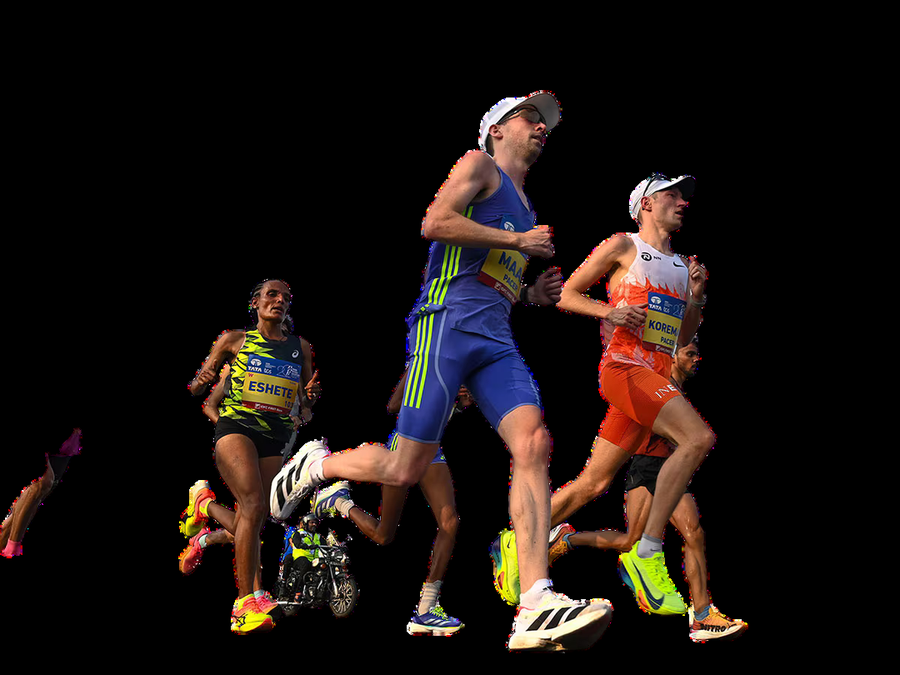
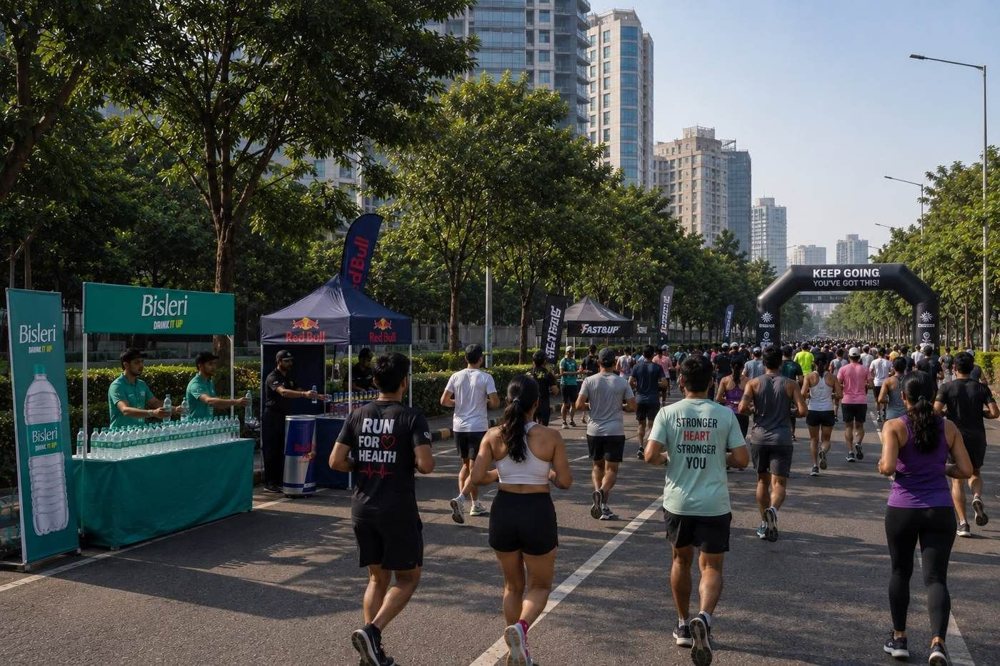
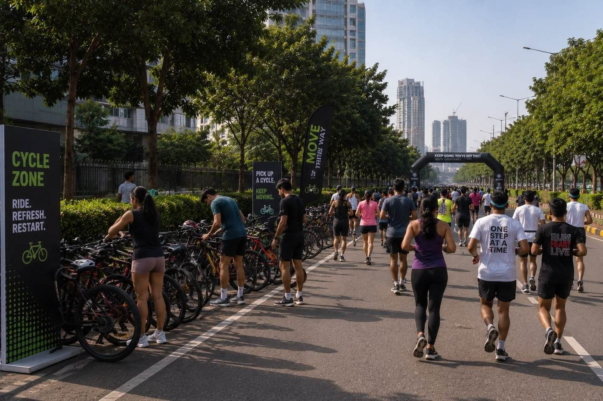
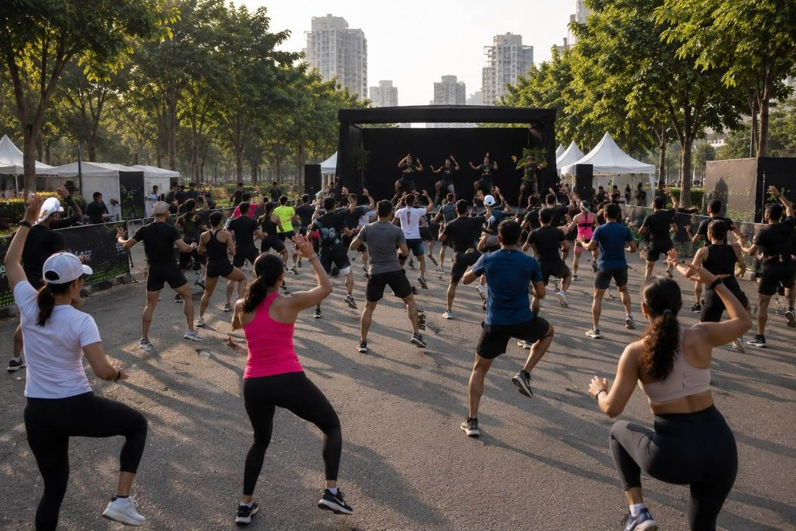
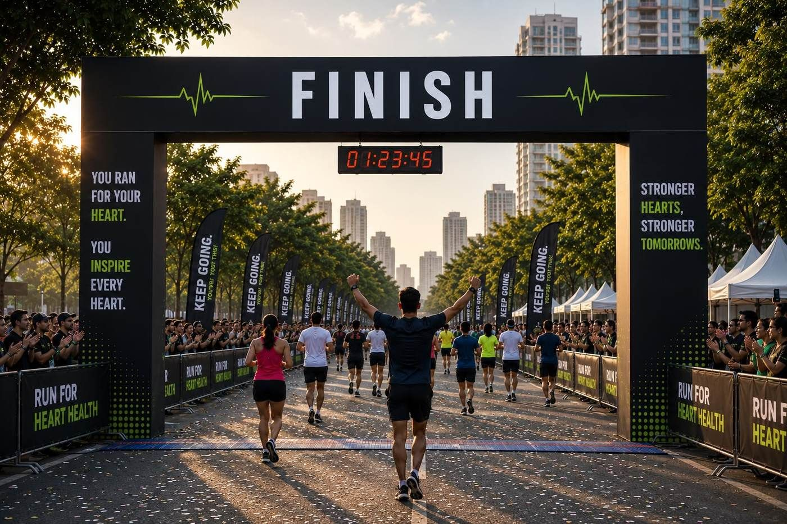
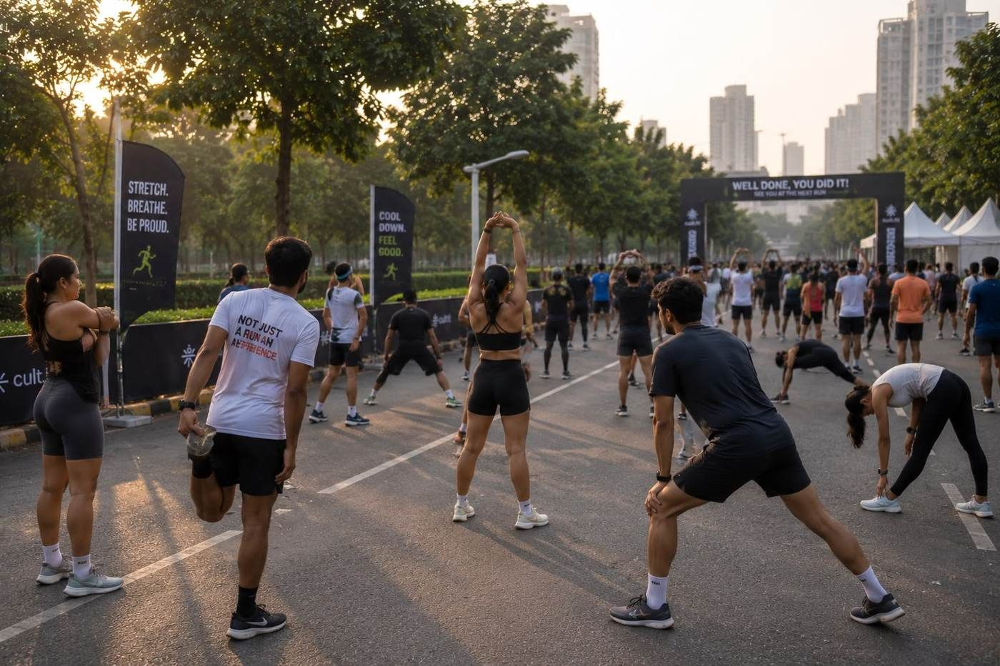
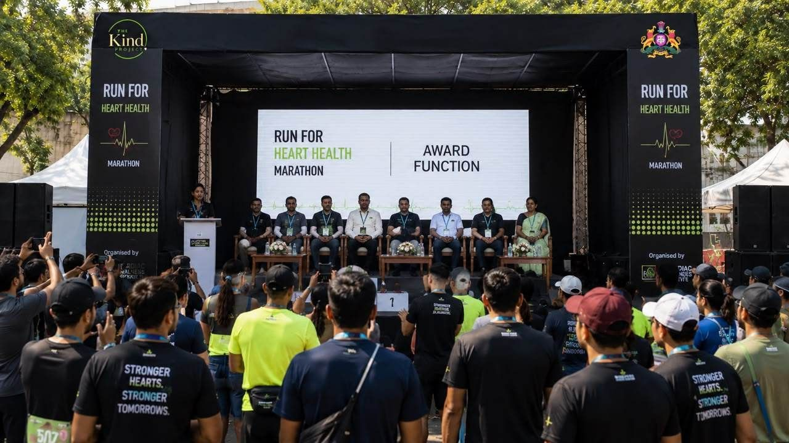

Karnataka2026
6,943
Reported deaths from heart attacks across the state — the number this run exists to bring down.

The Cardio Run is a city-wide run built around one idea — every step you take is one your heart will thank you for.
Sponsored by brands that back stronger hearts
Three distances, one city, and thousands of people moving together to make heart health impossible to ignore.
Organised by The Kind Project (Trust) in collaboration with the Government of Karnataka’s Department of Health & Family Welfare, The Cardio Run brings runners, walkers, cyclists and dancers onto one course for one morning of movement — followed by a full health check-up, live music and a celebration built to last well past the finish line.
Whatever pace you keep, you’re running for the same reason: a stronger heart, for yourself and for everyone watching from the sidelines.
NCRB’s 2026 Report on death rates from heart attacks makes the case louder than we ever could.
Reported deaths from heart attacks across the state — the number this run exists to bring down.
Of those cases, the number recorded in Bengaluru alone — over a third of the state’s total.
Of reported heart-attack deaths in India occurred among people still in their early adulthood.
Source: National Crime Records Bureau (NCRB), 2026 Report. Rising cardiac cases among increasingly younger populations are the reason The Cardio Run puts cardio movement, screening and awareness in one place, once a year.
Every distance ends at the same finish line — choose the one that fits where you’re starting from.
An easy, family-friendly walk-or-run for first-timers, kids and anyone getting their heart moving for the first time.
The signature distance — a fast, festival-paced loop through the city with full hydration and energy support.
For the seasoned runners — a proper morning test, timed and marshalled the whole way to the finish arch.
Water stations, energy-drink stops and a route lined with volunteers and music — every mile out there is a story, not just a distance.

Hydration, energy and encouragement — the whole course is built around keeping you moving.

Pick up a bike along the route and cover ground your own way.

A live, stage-led session gets the whole crowd moving before the flag-off — high energy, zero pressure.

Cross the arch to a crowd on both sides, your time on the clock, and a city cheering for stronger hearts.

A guided session brings heart rates down safely for full post-run recovery.

Top finishers across every category are honoured on stage — recognising the runners who pushed the hardest for their hearts.
A full morning of things to see, do and take home.
Free on-site cardiac screening for every registered runner.
Capture the morning — because every mile deserves a memory.
Snacks, breakfast and a few surprises for the road home.
Doors open at 5:30 AM. Here’s exactly how the morning unfolds.
Save your spotPresented by The Kind Project (Trust), in collaboration with the Government of Karnataka’s Department of Health & Family Welfare.
Registrations for the 3K, 5K and 10K are open now — spots are limited.